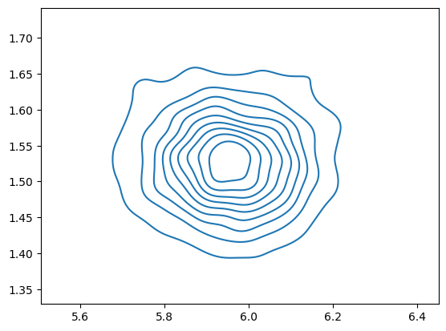
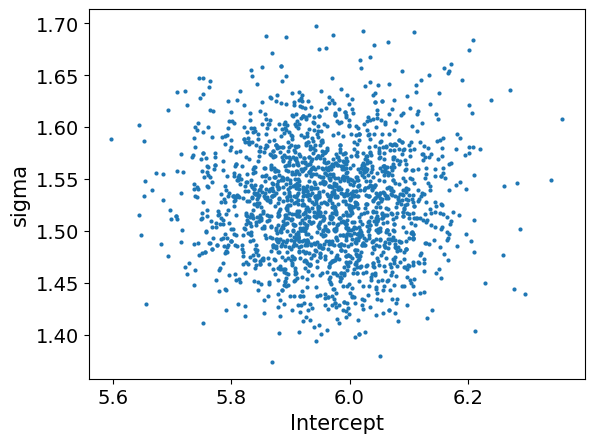
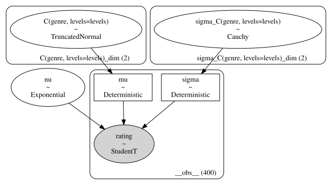

Half a dozen ways to measure the difference in means in two groups in Bambi#
This notebook uses Python (Bambi) to reproduce the statistical analyses from the blog post Half a dozen frequentist and Bayesian ways to measure the difference in means in two groups by Andrew Heiss.
import numpy as np
import pandas as pd
import seaborn as sns
Example movies genres#
see https://www.andrewheiss.com/blog/2019/01/29/diff-means-half-dozen-ways/
see also https://bookdown.org/content/3686/metric-predicted-variable-on-one-or-two-groups.html#two-groups
movies = pd.read_csv("../../datasets/movies.csv")
movies.head()
| title | year | rating | genre | genre_numeric | |
|---|---|---|---|---|---|
| 0 | Blowing Wild | 1953 | 5.6 | Action | 1 |
| 1 | No Way Back | 1995 | 5.2 | Action | 1 |
| 2 | New Jack City | 1991 | 6.1 | Action | 1 |
| 3 | Noigwon | 1983 | 4.2 | Action | 1 |
| 4 | Tarzan and the Jungle Boy | 1968 | 5.2 | Action | 1 |
movies.groupby("genre")["rating"].mean()
genre
Action 5.2845
Comedy 5.9670
Name: rating, dtype: float64
from scipy.stats import ttest_ind
actions = movies[movies["genre"]=="Action"]["rating"]
comedies = movies[movies["genre"]=="Comedy"]["rating"]
ttest_ind(actions, comedies, equal_var=True)
TtestResult(statistic=-4.47525173500199, pvalue=9.976981171112132e-06, df=398.0)
ttest_ind(actions, comedies, equal_var=False)
TtestResult(statistic=-4.47525173500199, pvalue=9.978285839671782e-06, df=397.7995256063933)
import bambi as bmb
# Model formula
levels = ["Comedy", "Action"]
formula = bmb.Formula("rating ~ 1 + C(genre, levels=levels)")
# Choose custom priors
priors = {
"Intercept": bmb.Prior("Normal", mu=0, sigma=5),
"C(genre, levels=levels)": bmb.Prior("Normal", mu=0, sigma=1)
}
# Build model
model_eq = bmb.Model(formula, priors=priors, data=movies)
# Get model description
print(model_eq)
Formula: rating ~ 1 + C(genre, levels=levels)
Family: gaussian
Link: mu = identity
Observations: 400
Priors:
target = mu
Common-level effects
Intercept ~ Normal(mu: 0.0, sigma: 5.0)
C(genre, levels=levels) ~ Normal(mu: 0.0, sigma: 1.0)
Auxiliary parameters
sigma ~ HalfStudentT(nu: 4.0, sigma: 1.559)
# model_eq.build()
# model_eq.graph()
# Fit the model using 1000 on each chain
idata_eq = model_eq.fit(draws=1000)
Initializing NUTS using jitter+adapt_diag...
/opt/hostedtoolcache/Python/3.10.16/x64/lib/python3.10/site-packages/pytensor/link/c/cmodule.py:2959: UserWarning: PyTensor could not link to a BLAS installation. Operations that might benefit from BLAS will be severely degraded.
This usually happens when PyTensor is installed via pip. We recommend it be installed via conda/mamba/pixi instead.
Alternatively, you can use an experimental backend such as Numba or JAX that perform their own BLAS optimizations, by setting `pytensor.config.mode == 'NUMBA'` or passing `mode='NUMBA'` when compiling a PyTensor function.
For more options and details see https://pytensor.readthedocs.io/en/latest/troubleshooting.html#how-do-i-configure-test-my-blas-library
warnings.warn(
WARNING (pytensor.tensor.blas): Using NumPy C-API based implementation for BLAS functions.
Multiprocess sampling (2 chains in 2 jobs)
NUTS: [sigma, Intercept, C(genre, levels=levels)]
Sampling 2 chains for 1_000 tune and 1_000 draw iterations (2_000 + 2_000 draws total) took 1 seconds.
We recommend running at least 4 chains for robust computation of convergence diagnostics
import arviz as az
az.summary(idata_eq, stat_focus="median")
| median | mad | eti_3% | eti_97% | mcse_median | ess_median | ess_tail | r_hat | |
|---|---|---|---|---|---|---|---|---|
| sigma | 1.528 | 0.037 | 1.431 | 1.629 | 0.002 | 2055.308 | 1356.0 | 1.00 |
| Intercept | 5.958 | 0.074 | 5.752 | 6.156 | 0.003 | 2474.614 | 1319.0 | 1.00 |
| C(genre, levels=levels)[Action] | -0.667 | 0.100 | -0.946 | -0.376 | 0.004 | 2468.725 | 1492.0 | 1.01 |
# JOINT PLOT
Intercept_samples = idata_eq.posterior['Intercept'].values.flatten()
sigma_samples = idata_eq.posterior['sigma'].values.flatten()
ax = sns.kdeplot(x=Intercept_samples, y=sigma_samples, fill=False)

az.plot_pair(idata_eq, var_names=["Intercept", "sigma"]);

Regression, assuming unequal variances#
levels = ["Comedy", "Action"]
formula_uneq = bmb.Formula("rating ~ 1 + C(genre,levels=levels)",
"sigma ~ C(genre,levels=levels)")
priors = {
"Intercept": bmb.Prior("Normal", mu=0, sigma=5),
"C(genre, levels=levels)": bmb.Prior("Normal", mu=0, sigma=1),
"sigma": {"C(genre, levels=levels)": bmb.Prior("Cauchy", alpha=0, beta=1)},
}
# Build model
model_uneq = bmb.Model(formula_uneq, priors=priors, data=movies)
# Get model description
print(model_uneq)
# model_uneq.build()
# model_uneq.graph()
Formula: rating ~ 1 + C(genre,levels=levels)
sigma ~ C(genre,levels=levels)
Family: gaussian
Link: mu = identity
sigma = log
Observations: 400
Priors:
target = mu
Common-level effects
Intercept ~ Normal(mu: 0.0, sigma: 5.0)
C(genre, levels=levels) ~ Normal(mu: 0.0, sigma: 1.0)
target = sigma
Common-level effects
sigma_Intercept ~ Normal(mu: 0.0, sigma: 1.0)
sigma_C(genre, levels=levels) ~ Cauchy(alpha: 0.0, beta: 1.0)
idata_uneq = model_uneq.fit(draws=1000)
Initializing NUTS using jitter+adapt_diag...
Multiprocess sampling (2 chains in 2 jobs)
NUTS: [Intercept, C(genre, levels=levels), sigma_Intercept, sigma_C(genre, levels=levels)]
Sampling 2 chains for 1_000 tune and 1_000 draw iterations (2_000 + 2_000 draws total) took 2 seconds.
We recommend running at least 4 chains for robust computation of convergence diagnostics
az.summary(idata_uneq, stat_focus="median")
| median | mad | eti_3% | eti_97% | mcse_median | ess_median | ess_tail | r_hat | |
|---|---|---|---|---|---|---|---|---|
| Intercept | 5.957 | 0.072 | 5.753 | 6.161 | 0.002 | 2928.974 | 1598.0 | 1.0 |
| C(genre, levels=levels)[Action] | -0.667 | 0.099 | -0.944 | -0.389 | 0.003 | 2750.760 | 1574.0 | 1.0 |
| sigma_Intercept | 0.434 | 0.033 | 0.345 | 0.533 | 0.001 | 3574.815 | 1505.0 | 1.0 |
| sigma_C(genre, levels=levels)[Action] | -0.022 | 0.047 | -0.162 | 0.115 | 0.002 | 3368.344 | 1559.0 | 1.0 |
np.exp(az.summary(idata_uneq, stat_focus="median").loc["sigma_C(genre, levels=levels)[Action]","median"])
0.97824023505121
BEST#
levels = ["Comedy", "Action"]
formula_best = bmb.Formula("rating ~ 1 + C(genre,levels=levels)",
"sigma ~ C(genre,levels=levels)")
priors = {
"Intercept": bmb.Prior("Normal", mu=0, sigma=5),
"C(genre, levels=levels)": bmb.Prior("Normal", mu=0, sigma=1),
"sigma": {"C(genre, levels=levels)": bmb.Prior("Cauchy", alpha=0, beta=1)},
"nu": bmb.Prior("Exponential", lam=1/29),
}
# Build model
model_best = bmb.Model(formula_best, priors=priors, family="t", data=movies)
# Get model description
print(model_best)
# model_best.build()
# model_best.graph()
Formula: rating ~ 1 + C(genre,levels=levels)
sigma ~ C(genre,levels=levels)
Family: t
Link: mu = identity
sigma = log
Observations: 400
Priors:
target = mu
Common-level effects
Intercept ~ Normal(mu: 0.0, sigma: 5.0)
C(genre, levels=levels) ~ Normal(mu: 0.0, sigma: 1.0)
Auxiliary parameters
nu ~ Exponential(lam: 0.0345)
target = sigma
Common-level effects
sigma_Intercept ~ Normal(mu: 0.0, sigma: 1.0)
sigma_C(genre, levels=levels) ~ Cauchy(alpha: 0.0, beta: 1.0)
idata_best = model_best.fit(draws=1000)
Initializing NUTS using jitter+adapt_diag...
Multiprocess sampling (2 chains in 2 jobs)
NUTS: [nu, Intercept, C(genre, levels=levels), sigma_Intercept, sigma_C(genre, levels=levels)]
Sampling 2 chains for 1_000 tune and 1_000 draw iterations (2_000 + 2_000 draws total) took 3 seconds.
There were 3 divergences after tuning. Increase `target_accept` or reparameterize.
We recommend running at least 4 chains for robust computation of convergence diagnostics
az.summary(idata_best, stat_focus="median")
| median | mad | eti_3% | eti_97% | mcse_median | ess_median | ess_tail | r_hat | |
|---|---|---|---|---|---|---|---|---|
| nu | 32.088 | 13.710 | 10.694 | 108.824 | 0.720 | 1677.602 | 1549.0 | 1.0 |
| Intercept | 5.974 | 0.071 | 5.771 | 6.183 | 0.004 | 1959.652 | 1559.0 | 1.0 |
| C(genre, levels=levels)[Action] | -0.685 | 0.106 | -0.961 | -0.383 | 0.004 | 2219.908 | 1327.0 | 1.0 |
| sigma_Intercept | 0.390 | 0.039 | 0.279 | 0.495 | 0.002 | 1776.161 | 1489.0 | 1.0 |
| sigma_C(genre, levels=levels)[Action] | -0.002 | 0.051 | -0.138 | 0.137 | 0.002 | 2057.424 | 1549.0 | 1.0 |
BEST with priors on variables instead of difference#
levels = ["Comedy", "Action"]
formula_best2 = bmb.Formula("rating ~ 0 + C(genre,levels=levels)",
"sigma ~ 0 + C(genre,levels=levels)")
import pymc as pm
import pytensor
def ShiftedExp(name, lam, **kwargs):
def shited_exp(lam, loc, size):
return pm.Exponential.dist(lam=lam) + loc
return pm.CustomDist(name, lam, 1, dist=shited_exp, **kwargs)
priors = {
"C(genre, levels=levels)": bmb.Prior("TruncatedNormal", mu=6, sigma=2, lower=1, upper=10),
"sigma": {"C(genre, levels=levels)": bmb.Prior("Cauchy", alpha=0, beta=1)},
"nu": bmb.Prior("Exponential", lam=1/29),
#"nu": bmb.Prior("ShiftedExp", lam=1/29.0, dist=ShiftedExp),
}
# Build model
model_best2 = bmb.Model(formula_best2, priors=priors, family="t", data=movies)
# Get model description
print(model_best2)
Formula: rating ~ 0 + C(genre,levels=levels)
sigma ~ 0 + C(genre,levels=levels)
Family: t
Link: mu = identity
sigma = log
Observations: 400
Priors:
target = mu
Common-level effects
C(genre, levels=levels) ~ TruncatedNormal(mu: 6.0, sigma: 2.0, lower: 1.0, upper: 10.0)
Auxiliary parameters
nu ~ Exponential(lam: 0.0345)
target = sigma
Common-level effects
sigma_C(genre, levels=levels) ~ Cauchy(alpha: 0.0, beta: 1.0)
model_best2.build()
model_best2.graph()

# model_best2.plot_priors();
idata_best2 = model_best2.fit(draws=1000)
Initializing NUTS using jitter+adapt_diag...
Multiprocess sampling (2 chains in 2 jobs)
NUTS: [nu, C(genre, levels=levels), sigma_C(genre, levels=levels)]
Sampling 2 chains for 1_000 tune and 1_000 draw iterations (2_000 + 2_000 draws total) took 2 seconds.
There were 5 divergences after tuning. Increase `target_accept` or reparameterize.
We recommend running at least 4 chains for robust computation of convergence diagnostics
az.summary(idata_best2, stat_focus="median")
| median | mad | eti_3% | eti_97% | mcse_median | ess_median | ess_tail | r_hat | |
|---|---|---|---|---|---|---|---|---|
| nu | 31.185 | 13.702 | 10.156 | 113.593 | 0.816 | 1106.096 | 1344.0 | 1.0 |
| C(genre, levels=levels)[Comedy] | 5.987 | 0.071 | 5.777 | 6.194 | 0.003 | 1649.712 | 1363.0 | 1.0 |
| C(genre, levels=levels)[Action] | 5.293 | 0.075 | 5.079 | 5.491 | 0.003 | 2600.525 | 1665.0 | 1.0 |
| sigma_C(genre, levels=levels)[Comedy] | 0.385 | 0.041 | 0.271 | 0.497 | 0.002 | 1754.776 | 1264.0 | 1.0 |
| sigma_C(genre, levels=levels)[Action] | 0.384 | 0.035 | 0.281 | 0.489 | 0.002 | 1141.400 | 1263.0 | 1.0 |
az.summary(idata_best2, stat_focus="median")
| median | mad | eti_3% | eti_97% | mcse_median | ess_median | ess_tail | r_hat | |
|---|---|---|---|---|---|---|---|---|
| nu | 31.185 | 13.702 | 10.156 | 113.593 | 0.816 | 1106.096 | 1344.0 | 1.0 |
| C(genre, levels=levels)[Comedy] | 5.987 | 0.071 | 5.777 | 6.194 | 0.003 | 1649.712 | 1363.0 | 1.0 |
| C(genre, levels=levels)[Action] | 5.293 | 0.075 | 5.079 | 5.491 | 0.003 | 2600.525 | 1665.0 | 1.0 |
| sigma_C(genre, levels=levels)[Comedy] | 0.385 | 0.041 | 0.271 | 0.497 | 0.002 | 1754.776 | 1264.0 | 1.0 |
| sigma_C(genre, levels=levels)[Action] | 0.384 | 0.035 | 0.281 | 0.489 | 0.002 | 1141.400 | 1263.0 | 1.0 |
np.exp(az.summary(idata_best2, stat_focus="median").loc["sigma_C(genre, levels=levels)[Action]","median"])
1.4681454416819895